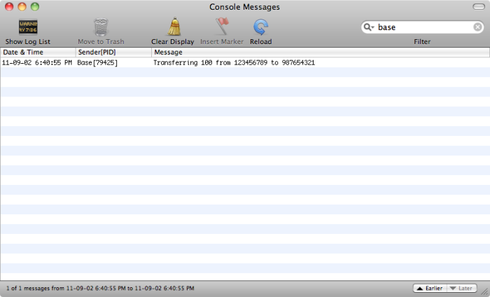

Lab 3 - Secure Logging
Lab
Sometimes developers are overzealous about logging. We will access the iPhone’s logs in order to see if our application logs any sensitive information. An attacker with access to a phone may be able to recover sensitive information form the device logs, even if the application itself is secured.
When we run an application on the iOS simulator, log messages are available in the Console app (located in /Applications/Utilities/). We can view them by opening the console in Xcode. Try transfering some money between accounts while looking at the log output.
You will see: 
As you can see, the application is logging account numbers. This is sensitive information that should not be logged.
If you use a iPhone, you can also see the log output by using the Organizer window in Xcode
Solution
It’s important to be aware of what you are logging and only log non-sensitive information. Verbose log output is very useful for developers, but can be a goldmine of sensitive information for attackers. Be especially careful about logging session keys and URLs that may contain important values.